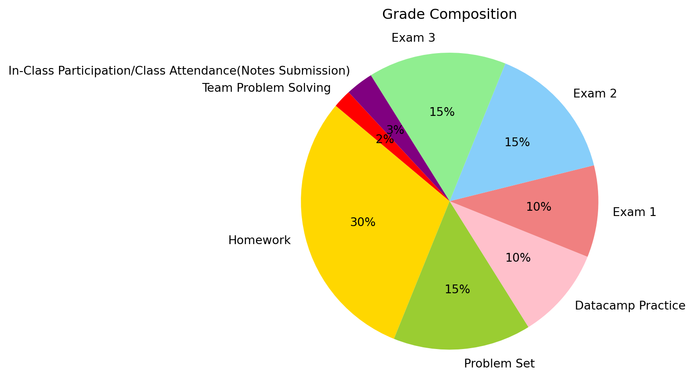

Syllabus
BAT/ECON 2401 – Statistics for Business and Economics Syllabus
Course Learning Objectives
By the end of this course, students will be able to:
- Understand the basics of statistical and probabilistic terminology and concepts.
- Choose appropriate methods for data collection and analysis in different contexts.
- Perform descriptive statistics to summarize and interpret data.
- Apply probability and statistics concepts to solve problems involving uncertainty.
- Conduct hypothesis tests and make informed decisions based on statistical significance.
- Interpret and analyze correlation and regression relationships between variables.
- Utilize Python for data analysis and visualization.
- Add a couple of highlighted points (programming skills, statistical inference, data modeling, and/or programming) to your resume.
- Handle basic statistics and probability-related interview questions.
- Obtain 2-3 certificates in Python Programming and Data Processing issued by datacamp.com which you can put on your resume.
Required Textbook and Computer Programming Tools
All books are available online. Physical and electronic copies are also available for purchase.
| Statistics for Business & Economics | Anderson, Sweeney, Williams etc. | Cengage, 15th Edition (Earlier Editions OKAY To Use) |
| Datacamp | An Online Learning Platform | 6 Online Courses to Complete |
| (Optional) Google Colab | An Open & Free Coding Platform | Google Colab Can Be Accessed Using Your Trinity Email |
Quantitative Reasoning (QR) Course
- Learning Outcomes: Upon successful completion of a Quantitative Reasoning (QR) course, student will have demonstrated the ability to:
- Represent and solve a problem in a framework involving mathematics, statistics, computation, or symbolic logic.
- Communicate their results.
- Describe the significance and limitations of the quantitative approach.
- Course Requirements: To be designated as fulfilling the Quantitative Reasoning (QR) requirement, a course will:
- Enable students to represent and solve problems within a quantitative framework involving mathematics, statistics, computation, or symbolic logic.
- Provide diverse opportunities for students to articulate both their process and communicate their results.
- Be structured so that quantitative methods are the primary focus of the course.
- Articulate the official Learning Outcomes (see above) in the course syllabus.
- Include a warning to students in the syllabus that if the course is approved for both an Approach and an Interdisciplinary Cluster, completion of the course will satisfy only one of the two requirements.
- Student Requirements: To receive credit for successful completion of the Quantitative Reasoning (QR) re-quirement, students must engage in appropriate learning activities to enable them to demonstrate the learning outcomes.
Digital Literacy (DL) Course
- Learning Outcomes: Upon successful completion of a Digital Literacy (DL) course, students will have demonstrated the ability to:
- Manipulate digital information by programming, scripting, or executing structured sequences of software commands to solve problems or engage in artistic expression.
- Course Requirements: To be designated as fulfilling the Digital Literacy (DL) requirement, a course will:
- Provide instruction both in the theory and the techniques necessary to complete a digital work using at least one appropriate technology, with the focus on de- veloping the technical facility (Students must learn “how” to complete a digital work using at least one appropriate technology, not just “about” it).
- provide appropriate instruction about how software tools work to make it easier to learn and use new tools over time.
- Enable students to apply their learning in the creation of a digital artifact.
- Enable students to explore at least three of the student learning outcomes, as specified in the syllabus.
- Be designed so that at least 20% of the course grade is determined by Digital Literacy (DL) curricular elements.
- Articulate the official Learning Outcomes (see above) in the course syllabus.
- Student Requirements: To receive credit for successful completion of a Digital Literacy (DL) course, students will:
- Use digital technologies to achieve three or more of the student learning outcomes stated above.
- Engage in advanced usage of software tools to produce a digital artifact of the work done in the class.
- Demonstrate a critical understanding of how digital technologies impact our world in class discussions, in written essay form and/or in their creative or artistic work.
- Additional Notes: It is recommended that the course provide evidence in the syllabus of at least two instructional modes for supporting student learning, i.e., online tutorials and/or instruc- tional videos as well as conceptual explanations or additional instructional support in the form of a senior/advanced student, another faculty member, or staff technology consultant.
Assurance of Learning
Learning goals derived from the department’s mission statement drive the delivery of this course. The affirmation of learning will be ascertained, if applicable, through an evaluation rubric that meets the AACSB Assurance of Learning Standards.
General Course Policies
- CLASS PREPARATION: Classes are designed to supplement the reading materials (textbooks, course slides, and required readings). Therefore, lectures will not necessarily address the text directly and may not cover all the details in the reading materials. Students must read assigned materials as part of the learning effort. Reading the assigned materials is a good way to cultivate your critical thinking ability and help better follow lectures. Bottom line: Read course slides and required readings.
- PARTICIPATION: Participation in classes is expected for all students, and a lack of participation will impact the grade (see evaluation). Students need to inform the instructor before the class about any anticipated excused absences. See the university attendance guidelines for the definition of excused absences.
- LATE SUBMISSIONS: DO NOT wait until the last minute to submit your assignments as it is always possible to encounter network or computer problems. You do have a grace period of TWO day for late submissions without any penalties, any late work after the grace period won’t be accepted. Please come to my office hour if you need help on lecture, assignments or computer programming.
- WRITING: Professional writing is expected for all assignments, tests, or presentations. You can utilize the writing center if you need assistance. Grammarly and any other similar tools are recommended.
- COMMUNICATION: Course communication will be done through Canvas and/or email. Be sure to check both regularly for announcements, updates, etc. You are responsible for any content provided. Students need to inform the instructor before the class about any anticipated excused absences. See the university attendance guidelines for the definition of excused absences. Leaving the lecture early without permission is automatically an unexcused absence.
- EMAIL CONVENTIONS: Please put the course name and code in the email subject. Any email without a formal and proper subject may be directed to spam or trash.
- EXAM DATES: Please plan your travel arrangements carefully to avoid conflicts with exam dates. If you have unavoidable commitments that necessitate taking exams on different dates, please inform me well in advance. Note that such accommodations will be considered on a case-by-case basis and are not guaranteed.
Grading
The final course grade will be calculated as follows:
| Category | Percentage |
|---|---|
| 10 Homeworks | 30% |
| 10 Practice Problem Sets | 15% |
| Datacamp Coding | 10% |
| Exam 01 | 10% |
| Exam 02 | 15% |
| Exam 03 | 15% |
| In-Class Participation/Class Attendance(Notes Submission) | 3% |
| Team Problem Solving | 2% |
Grade Distribution
Grades will be assigned using the following distribution:
- A (93.0 – 100), A- (90.0 – 92.9)
- B+ (87.0 – 89.9), B (83.0 – 86.9), B- (80.0 – 82.9)
- C+ (77.0 – 79.9), C (73.0 – 76.9), C- (70.0 – 72.9)
- D+ (67.0 – 69.9), D (60.0 – 66.9)
Coursework Requirements
Exams
There will be THREE exams. Through these exams you have the opportunity to demonstrate what you’ve learned in the course thus far. 1 page of letter-sized cheat sheet is allowed for exams. A calculator is allowed as well.
Homework, Quizzes, & Other Activities
There will be a few random quizzes, 9 homeworks, and other in-class activities in this course. In-class activities are designed to help you learn the material, and you are encouraged to complete them. Homework assignments are posted on Canvas and should be legible, complete, and self-contained. Homework assignments are to be turned in at 11:59 PM on their due dates. You are allowed a grace period of two day for late submissions, but any late submissions after that will not be accepted. If there are extreme circumstances which prevent you from completing the assignment on time, please email me before the due date. Please familiarize yourself with the Canvas system early in the semester. If you are not sure if an assignment has submitted correctly, you may email me with your attached homework as proof that it has been completed by the deadline.
In-Class Participation and Attendance
The attendance portion of the grade is made up of several components:
- Being physically present in class.
- Not distracting others while in class. This extends to other students. If your behavior impedes the learning environment of other students, it will be reflected in your grade.
- Completion of assigned coursework, including in-class activities, notes submissions and in-class quizzs.
In-Class Participation is essential for students’ engagement and learning experience. Following University policy, students with 4 or more absences may be dropped from the course before the withdrawal deadline or get an F for the final grade according to the University policies listed under the Course of Study Bulletin or may see their final grade affected.
In specific, you will need to complete the following tasks to earn the credits for In-Class Participation/Attendance: - Submit your notes via Canvas at the end of the day of each lecture. The format of the notes doesn’t matter, the submission is counted as your attendance. If you can’t make it to the class due to unaviodable reasons, please do NOT make any submisions. - The last 10-15 minutes of each lecture will be group-work time. And a team of 3 will be asked to give the entire class a quick presentation about how you solved the assigned problem and what results you have got. This presentation will be counted as Team Problem Solving credits.
Examinations
THREE examinations will be given to evaluate your knowledge of the topics covered in lectures, readings, assignments, as well as the ability to interpret results. Make-up exams will not be offered unless the absence is for a university sanctioned event (excuse notes must be received before semester examinations) or the instructors deem that the absence was permissible due to extreme extenuating circumstances.
Homework
In these 9 homeworks, you will apply what you’ve learned during the lecture and team-work time to complete statistics and probability related tasks. Homeworks are offered via Canvas, 3 attemps are allowed for each homework, and the average of the 3 attempts will be recorded as the final grade for the homework. Please complete the entire homework once you have started an attempt, otherwise, the system may automatically record ZERO for an unfinished attemp, which could lower your final grade for the homework.
Datacamp Practice
Due to the limited time we are having in class, we won’t be able to cover Python Programming in class. However, since it’s one of the most important and popular programming languadges, we will learning Python through DataCamp.com, which is an online learning platform. Click the link Datacamp to join the classroom Datacamp and complete all the assigned courses by the end of the semester. Each course only takes a couple of hours. Don’t wait until the last day of the semester. I will be available to answer any questions regarding joining the classroom or programming! Happy programming. Python is easy and fun learn.
Accomondations
Trinity University is committed to providing equal access and equal opportunity to students with disabilities. As a sign of that commitment, the office of Student Accessibility Services (SAS) is to assist students who seek accommodations. Information is available at: https://new.trinity.edu/campuslife/campus-services/student-accessibility-services. Please let me know if you need any assistance as early as possible.
Accommodated testing can be taken in the Accommodated Testing Center (ATC, 227 Halsell) between the hours of 8:30 a.m. and 4:30 p.m. on the exam dates. You must utilize the testing center if you want any allotted extra time for your exams. Students are responsible for scheduling their exams with the ATC. Students must take exams at the ATC on or before the scheduled exam dates.
Grades Booster
Yes, I plan to drop TWO lowest homework grades by the end of the semester. At least TWO extra credit opportunities will be offered throughout the semester. Stay tuned :)
Academic Honesty and Policy on the Usage of Generative AI (IMPORTANT)
The values of honesty, scholarship and the pursuit of excellence are central to the mission of Trinity University. The Academic Honor Code is the system through which Trinity students uphold these values by assuming individual responsibility for integrity. An environment that encourages personal responsibility facilitates one of the highest aims of education, the free pursuit of knowledge. The Academic Honor Code and related matters can be found at: https://inside.trinity.edu/academics/academic-honor-code:“On my honor, I have neither given nor received any unauthorized assistance on this work”
Generative AI (ChatGPT, Google Bard, Facebook’s LLaMa, Microsoft’s Copilot) is permitted to use ONLY to validate your answers and/or to help you debug/improve the code AFTER you have finished your assignments. You CANNOT use them to pursue answers or write the code for you. I have a background in Computer Science, so I DO have tools to check if you have used Generative AI for your work or not. So be careful. I’m watching ya!
Quantitative Reasoning and Skills Center(Tutoring Center) and Other Resources
The Quantitative Reasoning and Skills Center, located in the Tiger Learning Commons of the Library, offers additional support for courses with a quantitative component. This semester, three of our tutors – Antonio Gonzalez, Grace Etzel, and Wes Wasserburger – are available to support students in BAT/ECON 2401 at the times listed below. No appointment is necessary–drop in any time!
- Sunday: Grace, 3-6pm
- Monday: Wes, 3-5pm; Grace, 5:30-7:30pm
- Tuesday: Wes, 4-5:30pm; Antonio, 5:30-7:30pm
- Wednesday: Wes, 4-5:30pm; Antonio, 5:30-7:30pm
- Thursday: Antonio, 4-6pm
Trinity faculty hold students to the highest academic standards, but we also know that the very best students seek out help when necessary. The following resources are in place to support your academic success; learn more at gotu.us/success:
- Academic Success: time management, student skills, test anxiety, note taking, and tutoring C
- Career Services: major exploration and career guidance
- Counseling Services: mental health concerns and mental health referrals
- Quantitative Reasoning and Skills Center: quantitatively demanding coursework
- Student Accessibility Services: accommodations for a diagnosed disability
- Wellness Center: nutrition, sleep, and stress management
- Writing Center: starting a paper, finding a thesis, drafting and editing
Electronic Recordings of Classroom Instruction
Please be aware that all classroom instruction, including student participation in classroom activities, is subject to recording and dissemination on the University’s secure course management system (Canvas). The recordings will be made available only to students enrolled in the course to facilitate online learning and review. Students are expressly prohibited from capturing or copying classroom recordings by any means unless approved; violations will be subject to disciplinary action. Instructors who wish to use a recording outside of class must obtain the written consent of any students who are personally identifiable in the recording.
Required Video Sharing/Online Proctoring
The instructor reserves the right to use a Respondus Monitor or a similar tool on your computer while taking exams. Detailed instructions for use and downloading of the proctoring tool will be provided in an email. This software allows for online proctoring by monitoring individuals on their computer webcam, as well as video analytics to identify potential cheating. Any recordings will be treated as an education record subject to FERPA protections.
Sexual Misconduct, Required Reporting, and Title IX
As a Responsible Employee who is committed to creating an environment where every member of our community can thrive, I want to let you know that I am a Mandatory Reporter. What that means is that I am required to report any instances of sexual misconduct, including sexual harassment, non-consensual sexual intercourse, non-consensual sexual contact, sexual exploitation, intimate partner violence, stalking, and related retaliation that I am aware of to the Title IX Coordinator. So, if you share information with me about any incidents that implicate the Sexual Misconduct or Anti-Harassment Policies, I am required to report all information to the Title IX Coordinator to make sure you have information about support resources and complaint resolution options. My report does not initiate the complaint process, and you are in control over how you choose to engage with our Title IX Coordinator. If you or someone you know has experienced sexual misconduct, including sexual harassment, I encourage you to share this information directly with the Title IX Coordinator or one of the individuals who has been designated as a confidential resource on campus. The reporting form is available here.
Policy on Syllabus Changes and Contractual Obligations
This syllabus and course outline are subject to change in the discretion of the instructor during the course of the semester. Changes may be necessary because of student’s specific interest, the general class progression and emerging topics of interest. If any changes are implemented, they will be announced in class and/or posted to Canvas.
Important dates
- Aug 19: Add/Drop Begins
- Aug 26: Classes Begin
- Sep 3: Add/Drop Ends
- Sep 2: Labor Day Holiday
- Sep 13: Last Day Opt Pass/Fail
- Oct 4-5: Fall Break
- Nov 7: Last Day to Withdraw With a W
- Nov 25-29: Thanksgiving Recess
- Dec 13-19: Final Exam